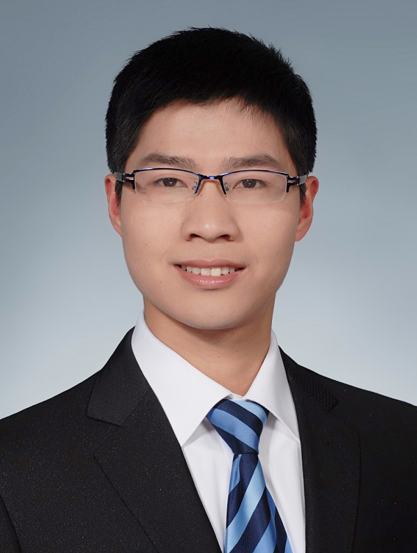

|
Welcome to Gang Chen's Homepage
Gang Chen
|
 |
Ph.D.
Research Fellow
School of Electrical and Electronic Engineering
Nanyang Technological University
Email: firstname dot lastname at ntu dot edu dot sg
Google Scholar ResearchGate
|
Biography
Education
2020: Ph.D. in Mechanical and Aerospace Engineering, University of Claifornia, Davis.
2015: M. Eng in Mechanical Engineering, Shanghai Jiao Tong University.
2012: B.Sc in Mechanical Engineering and Automation, Shanghai Jiao Tong University.
Appointments
2015.10-2020.03: Research/Teaching Assistant, University of California, Davis.
2015.03-2015.08: Hardware Engineer, Philips (China) Investment Co.,Ltd.
2013.02-2015.03: Research Assistant, Shanghai Jiao Tong University.
Research Interests
- Signal Processing, Time-Frequency Analysis.
- Formal Methods, Control Theory.
- Machine Learning, Monitoring and Control.
News and Announcements
2020
[Nov 10, 2020] Our paper "Formal Language Generation for Fault Diagnosis with Spectral Logic via Adversarial Training" has been accepted by IEEE Transactions on Industrial Informatics.
[July 10, 2020] Our paper "Data-Driven Real-Timed-Failure-Propagation-Graph Refinement for Complex System Fault Diagnosis" has been accepted by IEEE Control Systems Letters.
[April 27, 2020] Our paper "Frequency-temporal-logic-based Bearing Fault Diagnosis and Fault Interpretation using Bayesian Optimization with Bayesian Neural Networks" has been accepted by Mechanical Systems and Signal Processing.
[March 21, 2020] Our paper "Temporal-logic-based Semantic Fault Diagnosis with Time-series Data from Industrial Internet of Things" has been accepted by IEEE Transactions on Industrial Electronics.
|